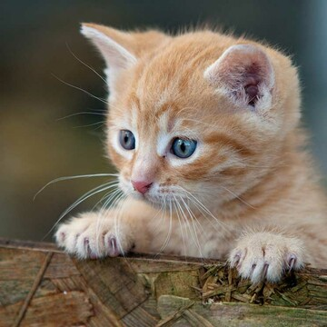

Mascotas en adopción


¿ESTÁS PENSANDO EN ADOPTAR UN PERRO O UN GATO?
A través de la historia, las mascotas han sido grandes compañeras de la vida de las personas, compartiendo alegrías, pero también ayudando a superar momentos difíciles.
Adoptar es un gran paso. Hay muchos aspectos que debes considerar previamente, desde elegir el tipo de mascota más adecuada para tu estilo de vida, hasta decidir dónde o con quién adoptar. Por eso queremos ayudarte para que ésta sea una de las mejores experiencias en tu vida y la de tu próximo amigo de cuatro patas.
Ante todo, debes tomar en cuenta la gran responsabilidad que representa tener a un animal de compañía dentro de tu vida, ya que desafortunadamente es común que algunos dueños que adquieren un cachorro o un gatito, de forma impulsiva decidan abandonarlo. Esto sucede por lo regular cuando se dan cuenta del compromiso a largo plazo que implica vivir con una mascota.
Una vez estando consciente de esto, ahora sí, veamos estos tres puntos para empezar con un proceso de adopción de mascotas.
¿CUÁLES SON LOS REQUISITOS PARA ADOPTAR UN PERRO O UN GATO?
1. Para encontrar al perro o gato ideal para ti, tendrás que investigar un poco.
Al explorar varios tipos y razas de perros y gatos, sus niveles de energía, sus necesidades de aseo y más, puedes asegurarte de que la mascota que llegue a tu hogar se adapte perfectamente a tu vida.
2. Para adoptar puedes hacerlo por dos vías: refugios o particulares.
Los refugios albergan animales para su cuidado, esperando que éstos encuentren un nuevo hogar que los adopte. También puedes buscar a través de particulares como amigos, familiares o veterinarias.
3. Dependiendo de la vía que sigas, serán distintos los requisitos que deberás cumplir.
Mientras que con un particular pueden existir menores requisitos para obtener una mascota en adopción (tal vez por la cercanía), en un refugio este proceso es más estricto.
¿CUÁLES SON LOS BENEFICIOS DE ADOPTAR UN PERRO O UN GATO?
Los beneficios de adoptar una mascota son:
Una oportunidad de mejorar la calidad de vida de esa nueva mascota.
La mascota tendrá un vínculo afectivo muy especial contigo en agradecimiento por haberlo adoptado en tu vida.
Estarás ayudando a otras mascotas en adopción, ya que contribuyes a reducir el número de perros y gatos que viven en los refugios, así como al apoyar el valioso trabajo de estas organizaciones.
Los beneficios de tener un perro o un gato en tu vida son:
Saber que llegarás a casa y tu mascota te recibirá con alegría. Lo cual te da una auténtica sensación de felicidad.
Tener a tu lado a un perro o un gato te ayuda a disminuir tus niveles de estrés con el simple hecho de estar en contacto con él.
La presencia de una mascota ayuda a que los niños se hagan responsables al cuidar de otro ser vivo. Además, se ha descubierto que los niños que crecen con mascotas tienden a enfermarse con menor frecuencia.